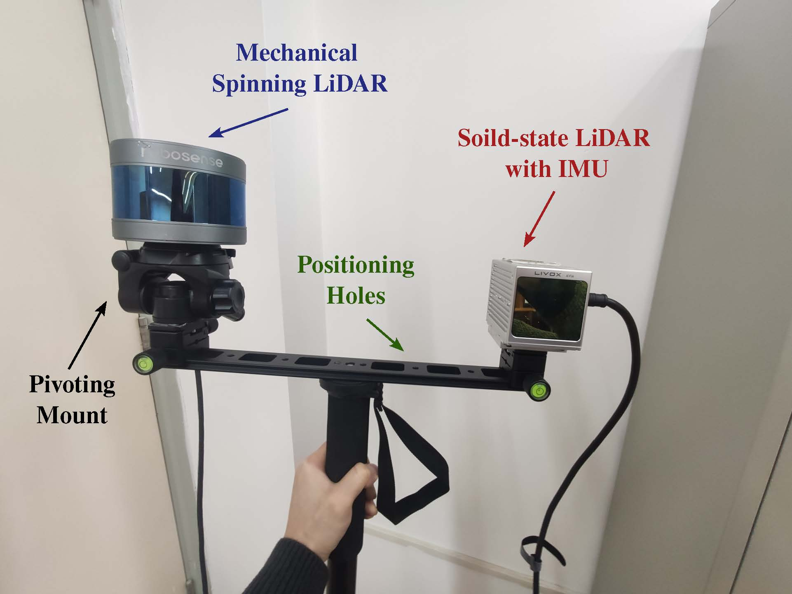

|
IMU-ASSISTED TARGET-FREE EXTRINSIC CALIBRATION OF HETEROGENEOUS LIDARS BASED ON CONTINUOUS-TIME OPTIMIZATION Zehao Yan1, Lin Zhang 1, Zhong Wang2, and Shenjie Zhao 1 1School of Software Engineering, Tongji University, Shanghai, China 2Department of Automation, Shanghai Jiao Tong University, Shanghai, China
|
Introduction
This is the website for our paper IA-HeLiC. IA-HeLiC is a calibration framework of heterogeneous LiDAR
systems assisted by IMU.
IA-HeLiC Calibration Dataset
We devised
and developed a handheld device to collect our calibration dataset which is equipped with a
ROBOSENSE
RS-LiDAR-16 mechanical spinning LiDAR and a Livox Avia solid-state LiDAR. The Livox Avia LiDAR
has a built-in 6-axis 200 Hz IMU. Our dataset collected with this device contains multiple
sequences of sensor data in various real-world scenes, each lasting more than 1
minute.

Source Codes
Demo Videos
The following
is the demo video demonstrating the framework and performance of our IA-HeLiC in extrinsics
calibration of a heterogeneous LiDAR system.
Last update: Jan. 29, 2024